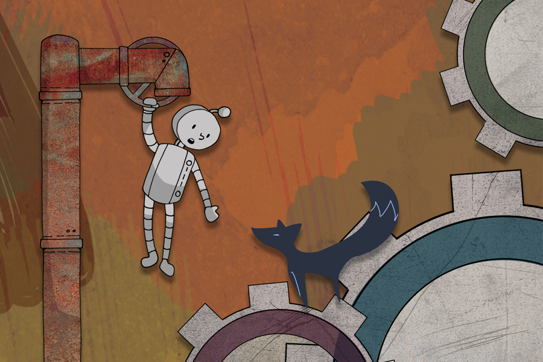
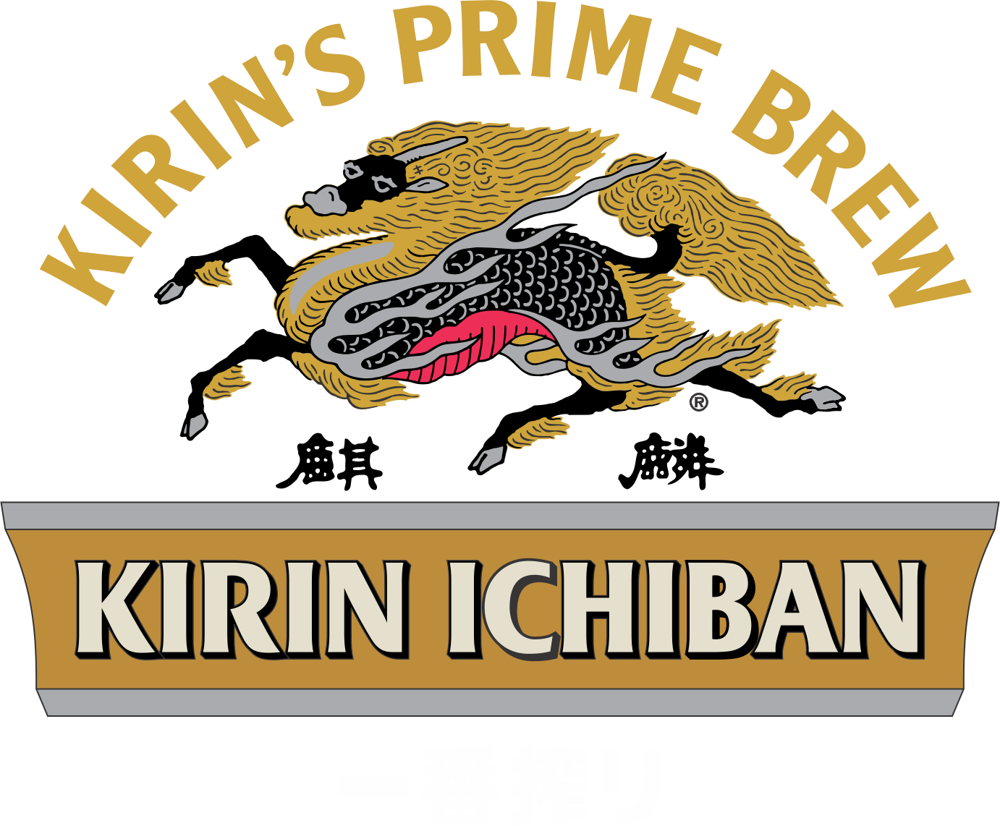

2018
Authentic Identity
04/08
05/13
交通大學校園各處
“Authentic
Identity”
崇尚科技發展，人工智慧技術不斷進步的時代，機器人與人類的差異也漸漸縮小，身為一個真實的人，什麼是我們存在於世界上無可取代、獨一無二的特質？身處於紛亂的、日新月異的時代，每一個人的真實身份又是什麼？
六大專案
《Real Part》－ 音樂野台
複數包含 Real Part 以及 Imaginary Part ，分別詮釋為人內心最深層的實部，以及為了符合社會期待所展現的虛部。藉由這個舞台、藉由表演者的故事敘述，讓每個演出背後的故事最真實的呈現。 <<Real Part>> 不只是音樂交流，更是一場心靈饗宴。
時間：4/29 13:30 - 17:00
地點：浩然圖書館前廣場
《Being》– 裝置藝術
Being以樹的形態出現，卻又獨樹一幟，對比周遭的樹，呈現強烈的外觀及形體變化。一系列的轉變彷彿掙扎，而找尋自我的意志就如佇立的枝幹般堅定。希望觀賞者藉由視覺觸及心靈感受，獲得啟發，思考真實的自我，尋找、確立芸芸眾生中自我獨特、無可取代的價值。
時間：4/8 ～ 5/13
地點：浩然後草皮

《非人報》- 藝趣節刊物
文字是雋永的語言，藉由文字寫下與交大人有關、與新竹有關的故事。身而為人，交大人，我們是否與眾不同？在這以科技領域著稱的校園裡，“人”存在的價值是否因此而貶或升值？
發送地點：交大校園
發送日期：第一期 4/8、第二期 4/29
「人?」– 影展
藉著舉辦一個影展，營造一個適合思考的觀影環境，讓與會者觀賞某些特別挑選的電影，使大家去思考人的本質，或許能多少改變自己思考，也改變自己看待人事物的方式。
時間：4/29～5/3
地點：4/29 浩然前廣場露天電影院，5/1～5/3 詳見內頁
《人造雨》 － 詩淚計畫
詩一直是乘載人類情緒的介質，當你哭不出來的時候，請讓詩來替你流淚。人透過情感可以找回真實自我，而詩可以反映出我們的情緒，所以我們希望能透過詩使大家體察真實的自己所擁有情緒。
時間：4/8 至 5/13
地點：浩然圖書館B1入口
《Emergence》 － 裝置藝術
這是一件位在交大「竹湖」的裝置藝術作品，與環境結合，整體呈現出「水上泡沫」的情境。在這件作品中，以水面類比於人的群體，以泡沫類比於個人的身份(identity)，而「水面」、「泡沫」和「陸地」的三個空間層次，對應到人的三個狀態。在群眾之中(水面)，人們被動地行動、模仿他人、在社會賦予的框架中生存，這是身分認同的初始狀態。泡沫從水中浮現，是個人在群眾之中尋找自我過程的一種隱喻。人由被動轉向主動，逐漸擁有自己的意識、省思自我的存在價值。 泡沫中存在抽象的人形，彷彿是孕育生命的卵。這是建構身分的過度階段，呈現生命意識的覺醒。最後，從卵中掙脫、離開水面而登上陸地的人形，象徵了找回真實自我、獲得解放的個人。
時間：4/8 至 5/13
地點：交大竹湖

亮彩光纖(來宥翔企業有限公司)